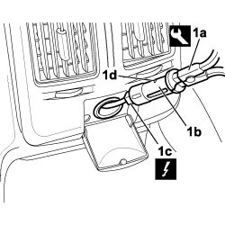

7065C85 REAR CURRENT SOCKET - R.R.
- Path
- Procedures > 70 FITTINGS > 7065 SAFETY BELTS AND ACCESSORIES > 7065C ACCESSORIES AND DECORATIONS > 7065C85 REAR CURRENT SOCKET - R.R.
- Kind
- repair procedure (removal / refitting; the operation number is the code)
- Applies to
- all engines; all production periods
- Interactive page
- https://sloeber94.github.io/elrnDB-fCrm/en/#/194001203
Applies to: all engines; all production periods
 Removing
Removing
 Refitting
Refitting- Disconnect the negative battery terminal.
Description | Connector | |
|---|---|---|
BATTERY |
- Open the cover flap.
1. Use the tool (1a) to release the rear cigar lighter support (1b) from the housing, disconnect the electrical connection (1c) and remove it .
Tool | Description | Function | Validity |
|---|---|---|---|
1876044000 | Caliper | Extractor |
Description | Connector | |
|---|---|---|
1c | REAR CURRENT SOCKET |

Applies to: all engines; all production periods
Refitting
Removing- Check that the cigar lighter housing is not ruined.
- Connect the electrical connection.
Description | Connector | |
|---|---|---|
REAR CURRENT SOCKET |
- Fit the front cigar lighter support in the housing, checking that it is properly inserted.
- Fit the cigar lighter in place.
- Connect the negative battery terminal.
Description | Connector | |
|---|---|---|
BATTERY |